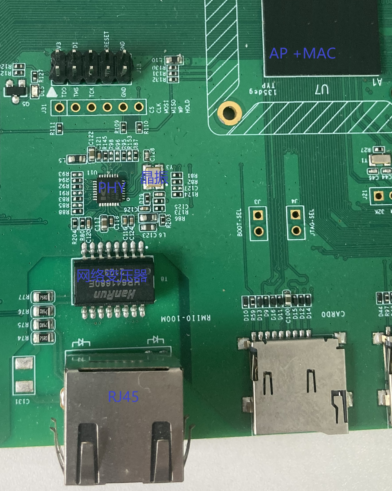
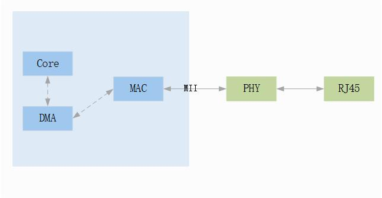
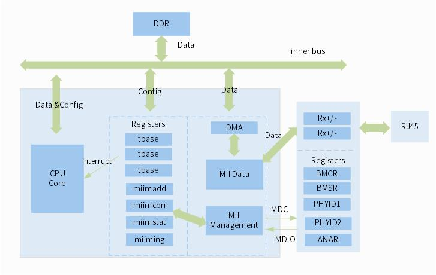
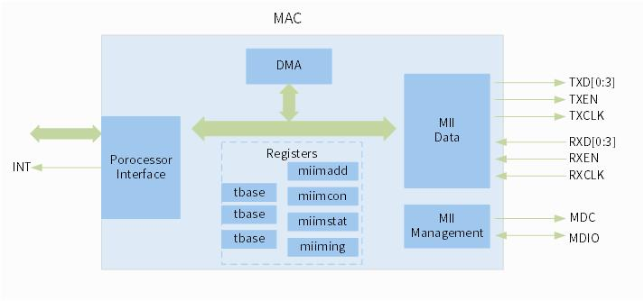
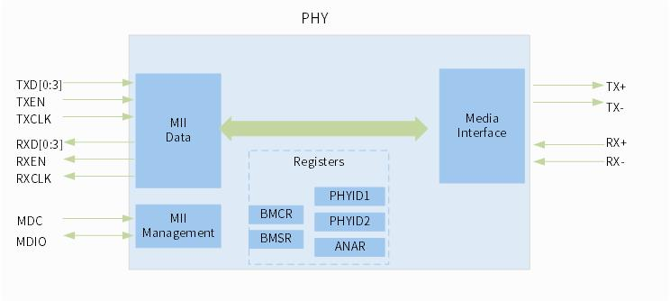

MAC 使用指南
15 Jan 2024
Read time: 1 minute(s)
以太网（Ethernet）是一种计算机局域网组网技术，基于 IEEE802.3 标准，它规定了包括物理层的连线（RJ45），电气信号（PHY）和媒体访问层（MAC）协议等， 以太网的特征是有线网络，网络中的各终端必须通过网线进行连接，以太网模块可以简单的理解为 MAC 通过 MII 总线控制 PHY 共同完成终端之间数据交换的一种设备。
| 术语 | 定义 | 注释说明 |
|---|---|---|
| MAC | Media Access Control | 媒体访问控制，Ethernet 中的一个组成模块，对应 OSI 参考模型中的数据链路层 |
| PHY | Physic | 物理接口收发器，物理对应 OSI 参考模型中的物理层 |
| MII | Media Independent Interface | 媒体独立接口，是 MAC 与 PHY 连接的标准接口，使用 4 根线来传输数据 |
| RMII | Reduced MII | 简化的媒体独立接口，使用 2 根线来传输数据 |
| GMII | Gigabit MII | 千兆的媒体独立接口，使用 8 根线来传输数据 |
| MDIO | Management Data Input/Output | PHY 的管理接口，用来读/写 PHY 的寄存器，以控制 PHY 的行为或获取 PHY 的状态 |
使用拓扑
一个典型的以太网电路至少需要如下器件的参与
-
RJ45 连接器
-
网络变压器
-
晶振
-
PHY 收发器
-
MAC 控制器
-
AP 处理器
集成 MAC 控制器模块，AP 内部也可以提供 PHY 收发器所需的时钟，从而不使用外部晶振模块。
如果要提升硬件的防静电能力，外部一般会增加 ESD 保护电路。

一个典型的以太网工作模块由如下组件组件组成
-
AP Core
-
DMA
-
MAC
-
PHY
AIC 的 SoC 根据型号不同，以太网模块有如下两种拓扑结构
全集成

SoC 内部集成 MAC 和 PHY
单 MAC
SoC 内部仅集成 MAC，需要外挂 PHY

模块架构

MAC 架构

PHY 架构

模块特性
-
支持全双工/半双工
-
支持 100/10 Mbps，部分 SoC 支持 1000 Mbps
-
支持 RMII 接口，部分 SoC 支持 RGMII 接口
-
支持内部 DMA
-
TXFIFO/RXFIFO 的大小均为 2048 Byte，均支持阈值模式和存储-转发模式
-
支持 VLAN 哈希过滤
-
支持 64-bit 哈希地址过滤、完美地址过滤（支持 8 个地址寄存器）
-
支持源地址的插入/替换，VLAN 的插入/替换/删除，CRC 的插入/替换/删除
-
支持接收校验和错误检测
-
支持发送校验和计算